Eviction is a serious issue; it can lead to housing instability, homelessness, and long-term negative health outcomes. Eviction is a cyclical event that could perpetuate poverty and community disinvestment. The more evictions that happen in a neighborhood, the higher the chance it will continue to experience the same issue.
Some of the main priority groups are low-income renters, households that experience housing burden, and areas with high unemployment rates. The issue our team is trying to look at is the Eviction problem across Philadelphia County at the census tract level. We have collected all the housing eviction data from Eviction Lab Philadelphia tracking.
Our model is trying to look at various predictors that may contribute to the issue of housing eviction and has a tool that would better predict where the next eviction cold spot is. We hope this tool could further inform policymakers to target potential eviction spots in advance and distribute resources to ensure everyone has a safe home to stay.
Some of the tangible actions that we wish to see include emergency rental assistance funds before the actual evictions occur and identifying neighborhoods for proactive tenant outreach programs to prevent eviction from happening in the first place.
Below are all of the ACS Variables that we think are important and relevant to the care of housing evictionin Philadelphia.
Median gross rent: (B25064)
Race: (B02001)
Median household income: (B19013)
% of Renter: (B25003)
Year Built(renter): (B25036)
Number of Room: (B25017)
Room Per Household: (B25020)
Family Structure: (B11001)
Unemployment in labor force: (C18120)
Gross Rent as a Percentage of Household Income: (B25070)
census data collected
Code
philly_tract_data=read.csv("data/philly_tract_data.csv")philly_tract=tracts( state ='PA',county ='101',year =2023)philly_tract_sf=philly_tract%>%select(GEOID,geometry)
Dewey rental data
As the median gross rent in ACS 5-year census data fails to capture the temporal monthly changes, we use Dewey rental data to compensate it. Dewey rentalhub web-scraped rental data from over 100+ sources. It has both specific locations, rental prices and date posted, making it possible for us to filter it to Philadelphia and then calculate the median gross rent by census tract per month to see how the changes in rent influence the eviction rate monthly.
Code
#input datafolder_path <-"data/rental-in-philly"all_parquet_files <-open_dataset(sources = folder_path, format ="parquet")combined_df <- all_parquet_files %>%collect()#reproject itrental_shp=combined_df%>%st_as_sf(coords =c("LONGITUDE", "LATITUDE"), crs =4326)#input city limit data api_url <-"https://services.arcgis.com/fLeGjb7u4uXqeF9q/arcgis/rest/services/City_Limits/FeatureServer/0/query?outFields=*&where=1%3D1&f=geojson"city_limits_data <-st_read(api_url)
Reading layer `OGRGeoJSON' from data source
`https://services.arcgis.com/fLeGjb7u4uXqeF9q/arcgis/rest/services/City_Limits/FeatureServer/0/query?outFields=*&where=1%3D1&f=geojson'
using driver `GeoJSON'
Simple feature collection with 1 feature and 3 fields
Geometry type: POLYGON
Dimension: XY
Bounding box: xmin: -75.28031 ymin: 39.86747 xmax: -74.95575 ymax: 40.13793
Geodetic CRS: WGS 84
Code
rental_shp_proj <-st_transform(rental_shp, crs =32618)city_limits_data_proj <-st_transform(city_limits_data, crs =32618)#filter to philadelphiaphillyrental_proj <-st_filter(rental_shp_proj, city_limits_data_proj, .pred = st_within)#filter to different timesphillyrental_proj_1923=phillyrental_proj%>%filter(year(DATE_POSTED) %in%c(2019:2023))philly_tract_sf=st_transform(philly_tract_sf,crs=32618)#merge with census tractphillyrental_proj_1923=phillyrental_proj_1923%>%st_join(philly_tract_sf,join = st_within)
Load quartly wage data
Moreover, we also consider if the change on the wage would influence the eviction rate. However, there is no tract level wage data per month. Instead, we use Philadelphia wage data by quarter, which means we have to assume wage level on different census tract is the same.
Code
file_list <-list.files(path ="data",pattern =".q1-q4 42101 Philadelphia County, Pennsylvania.csv",full.names =TRUE)wage_data <- file_list %>%set_names() %>%map_df(~read_csv(.x), .id ="source_file")%>%filter(own_title=="Total Covered")%>% dplyr::select(year,qtr,avg_wkly_wage)
Merge with different CPI and unemployment rate per month in Philadelphia
We also consider other potential living cost that would make people difficult to afford the rent, such as food and electricity, especially after the pandemic food and electricity is getting much more expensive. We use CPI to account for the potential price level increase for these living cost that may influence the eviction rate. What’s more, unemployment rate is also included, as more people may not afford the rent when unemployment rate increases.
Similar to wage data, none of them have monthly data on the census tract level, so we use Philadelphia as the geography and assume the whole geography is homogenous instead.
Code
food=read.csv(here('data/food.csv'))electricity=read.csv(here('data/electricity.csv'))commodities=read.csv(here('data/commodities.csv'))#merge with electricity cpidf$month=month(df$week_date)electricity$month=as.numeric(gsub("M","",electricity$Period))df$yearm=paste0(df$year,df$month)electricity$yearm=paste0(electricity$Year,electricity$month)df=electricity%>%mutate(electricitycpi=Value)%>% dplyr::select(yearm,electricitycpi)%>%right_join(df,by="yearm")#merge with food cpifood$first_of_month=ym(food$Label)df=food%>%mutate(foodcpi=Value)%>% dplyr::select(first_of_month,foodcpi)%>%right_join(df, by="first_of_month")df=df%>%arrange(week_date)%>%fill(foodcpi, .direction ="up")#merge with commodities cpicommodities = commodities %>%mutate(comcpi = Value, half_year_date =case_when( Period =="S01"~ymd(paste(Year, "01", "01")), Period =="S02"~ymd(paste(Year, "07", "01")) ) ) %>% dplyr::select(half_year_date, comcpi)df = df %>%left_join(commodities, by =c("first_of_month"="half_year_date"))df = df %>%arrange(week_date) %>%fill(comcpi, .direction ="down")
Reading in Philadelphia Neighborhoods as a shp object. This will allow us to aggregate data on neighborhoods to identify neighborhood fixed effect.
Code
neighborhood_folder <-here("data", "philadelphia-neighborhoods")neighborhood_path <-file.path(neighborhood_folder, "philadelphia-neighborhoods.shp")# Read the shapefilephilly_neighborhoods <-st_read(neighborhood_path, quiet =TRUE)philly_neighborhoods=st_transform(philly_neighborhoods, crs=32618)census_points=st_centroid(df_census_sf)df_census_sf=st_transform(df_census_sf,crs=32618)census_points=st_transform(census_points,crs=32618)points_joined <-st_join(census_points, philly_neighborhoods)df_census_sf=st_join(df_census_sf,philly_neighborhoods)# Calculate mean MHI for each polygonmean_mhi_by_poly <- points_joined %>%st_drop_geometry() %>%group_by(MAPNAME) %>%summarise(meanMHI =mean(median_hh_income, na.rm =TRUE))# Join the result back to the polygon layerdf_census_sf_final <- df_census_sf %>%left_join(mean_mhi_by_poly, by ="MAPNAME")%>%st_as_sf() # reclassify the neighborhood data based on quantile (25%)df_census_sf_final$MHI_quantile <-cut( df_census_sf_final$meanMHI,breaks =quantile( df_census_sf_final$meanMHI,probs =seq(0, 1, 0.25), na.rm =TRUE ),include.lowest =TRUE,labels =c("Q1 (lowest)", "Q2", "Q3", "Q4 (highest)"))
Merge with rent data
Code
#calculate rent by month and tractrent_by_month_tract=phillyrental_proj_1923%>%st_drop_geometry()%>%mutate(date=format(DATE_POSTED,"%Y-%m"))rent_by_month_tract=rent_by_month_tract%>% dplyr::select(GEOID,RENT_PRICE,date)%>%group_by(GEOID,date)%>%summarise(median_rent=median(RENT_PRICE))
Commercial and office points of interests (Amenities)(alternative in the next section if you do not want to download pbf data)
Code
# downloading osm data from geofabrik:https://download.geofabrik.de/north-america/us-northeast.html#input_pbf <- "the pdf file downloaded from the link above"# get boundary of Philadelphia Countypa_counties <-counties(state ="PA", year =2023)# Filter to Philadelphia Countyphilly_boundary <-subset(pa_counties, NAME =="Philadelphia")# read the full OSM PBF (you can select layer types like points, lines, polygons)poi <-oe_read(input_pbf, boundary = philly_boundary, boundary_type ="clipsrc", layer ="points") # or "lines" / "multipolygons"keywords <-c("shop","amenity","office","historic","tourism","healthcare","building","leisure")pattern <-paste0(keywords, collapse ="|")# ==== Filter by 'other_tags' ====if ("other_tags"%in%names(poi)) { poi$other_tags <-iconv(as.character(poi$other_tags), from ="", to ="UTF-8", sub ="") poi$other_tags[is.na(poi$other_tags)] <-"" poi_filtered <- poi %>%filter(grepl(pattern, other_tags, ignore.case =TRUE))cat("filtered POIs found:", nrow(poi_filtered), "of", nrow(poi), "\n")}
Alternative: filtered POI if you donot want to download osm data
Reading layer `philadelphia_poi_filtered' from data source
`C:\Users\Tim Wen\Documents\GitHub\MUSA5080-Final\data\filtered poi\philadelphia_poi_filtered.shp'
using driver `ESRI Shapefile'
Simple feature collection with 11161 features and 10 fields
Geometry type: POINT
Dimension: XY
Bounding box: xmin: -75.27472 ymin: 39.87383 xmax: -74.95777 ymax: 40.13445
Geodetic CRS: WGS 84
Kernel Density Rasters (Economic activities density)
Instead of using distance to CBD, we extracted commercial and office points of interests from OpenStreetMap (OSM), and we operate a Kernel Density Estimation (KDE) with a bandwidth of 300 meters. By doing that, we manage to get a surface of density of economic activities across the whole city. The higher the KDE value is, the more economic activities it will be, implying a higher likelihood of the area as a city centers.
There are several benefits using this approach compared to distance to CBD. First, with the development of sub urbanization, even within the context of Philadelphia County, there is still a shift from monocentric model to polycentric model, meaning there multiple centers/sub centers. Using one CBD fail to capture these sub centers, which may also influence housing price. Second, CBD is an area rather than a point, distance method fail to capture this while the continuous surface computed by KDE would have a value of economic activities across the whole city.
Code
# get boundary of Philadelphia Countypa_counties <-counties(state ="PA", year =2023)# Filter to Philadelphia Countyphilly_boundary <-subset(pa_counties, NAME =="Philadelphia")philly_boundary <-st_transform(philly_boundary, 3364) poi <-st_transform(poi, 3364)# ==== Prepare point pattern ====# Convert sf points to spatstat ppp objectwin <-as.owin(st_union(philly_boundary)) # window from county boundarycoords <-st_coordinates(poi)pp <-ppp(x = coords[,1], y = coords[,2], window = win)
Warning: data contain duplicated points
Code
# ==== Run Kernel Density Estimation ====# Sigma = bandwidth in map units (here, meters)density_map <-density.ppp(pp, sigma =300*3.28084, edge =TRUE, at ="pixels",eps =c(100, 100))# ==== Convert to raster ====r_Economic <-rast(density_map)crs(r_Economic) <-st_crs(philly_boundary)$proj4stringr_Economic <-mask(r_Economic, vect(philly_boundary))
In this phase, we examine the eviction data to identify initial patterns, trends, and potential relationships across space and time. The goal is to build an early understanding of how eviction filings vary and where there are notable clusters.
Distribution of eviction counts
Code
# aggregate total filings by tracttract_totals <- df %>%filter(year(first_of_month) %in%c(2020, 2021, 2022, 2023)) %>%group_by(GEOID) %>%summarise(total_filings =sum(filings_2020, na.rm =TRUE), .groups ="drop")# create histogramggplot(tract_totals, aes(x = total_filings)) +geom_histogram(binwidth =20, fill ="darkseagreen3", color ="white") +scale_x_continuous(breaks =seq(0, max(tract_totals$total_filings, na.rm =TRUE), by =100)) +scale_y_continuous(expand =c(0, 0)) +labs(title ="Distribution of Eviction Filings by Census Tract (2020-2023)",subtitle ="Most tracts have fewer than 200 total filings; a few have extremely high counts",x ="Eviction Filings",y ="Number of Census Tracts",caption ="Source: Eviction Lab" ) +theme_minimal() +theme(plot.title =element_text(face ="bold", size =14),panel.grid.minor =element_blank() )
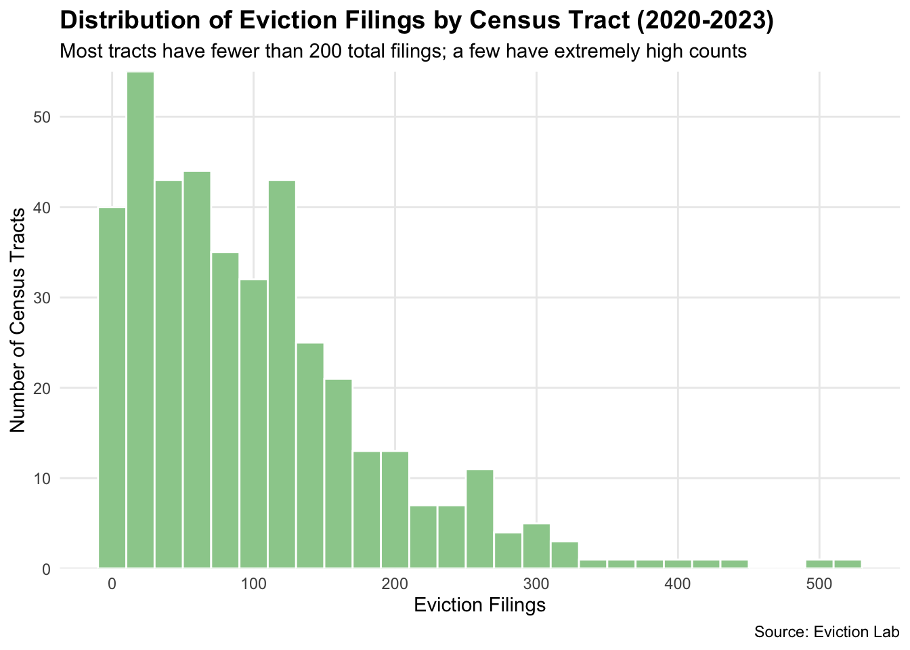
Most of the tracts have filings less than 200. There are some tracts that have more than 500 filings. Overall, we can see the distribution is skewed to the right.This reflects that while eviction is a widespread issue, there are a number of tracts experience high filings. These high-eviction tracts may represent concentrated areas of housing instability and economic issues.
Monthly Eviction Filings from 2020-2023
Code
# aggregate total filings by month across all yearsmonthly_totals <- df %>%mutate(year =year(first_of_month),month =month(first_of_month) ) %>%filter(year %in%c(2020, 2021, 2022, 2023)) %>%group_by(first_of_month) %>%summarise(total_filings =sum(filings_2020, na.rm =TRUE), .groups ="drop")# create histogram/bar chartggplot(monthly_totals, aes(x = first_of_month, y = total_filings)) +geom_col(fill ="darkseagreen3", color ="white", width =25) +scale_x_date(date_breaks ="3 months",date_labels ="%b\n%Y" ) +scale_y_continuous(labels = scales::comma) +labs(title ="Monthly Eviction Filings in Philadelphia (2020-2023)",subtitle ="Note: COVID-19 moratorium caused near-zero filings in April-June 2020",x =NULL,y ="Total Eviction Filings",caption ="Source: Eviction Lab" ) +theme_minimal() +theme(plot.title =element_text(face ="bold", size =14),axis.text.x =element_text(size =8),panel.grid.minor =element_blank() )
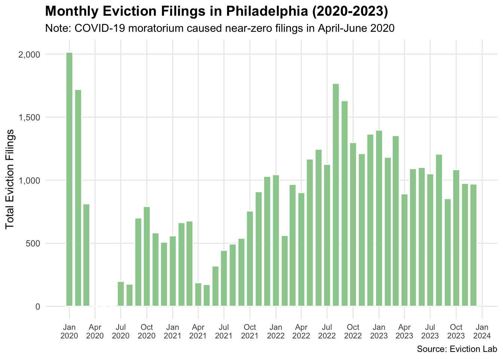
This figure displays monthly eviction filings in Philadelphia from January 2020 through late 2023. The COVID-19 eviction caused filings to drop to zero from April-June 2020. By mid-2022, eviction filings surged past pre-pandemic levels, peaking in August 2022 before stabilizing around 2023. There is not a apparent pattern among different month across the year. The overall trend is after pandemic, eviction filings begin to raise and after August 2022 it begins to decline.
Monthly Eviction Filings by Year
Code
# Aggregate by year and monthmonthly_by_year <- df %>%group_by(year, month) %>%summarise(total_filings =sum(filings_2020, na.rm =TRUE), .groups ="drop") %>%filter(year %in%c(2020, 2021, 2022, 2023))# Function to create plot for each yearmake_year_plot <-function(data, year_num) { year_data <- data %>%filter(year == year_num)ggplot(year_data) +geom_col(aes(x =factor(month), y = total_filings), fill ="darkseagreen3", color ="black", width =0.7) +scale_x_discrete(labels = month.abb) +labs(title =as.character(year_num),x =NULL,y =NULL) +theme_minimal() +theme(plot.title =element_text(face ="bold", hjust =0.5, size =14),axis.text.x =element_text(size =8, angle =45, hjust =1),axis.text.y =element_text(size =8) )}# Create 4 plotsplot_list <-map(c(2020, 2021, 2022, 2023), ~make_year_plot(monthly_by_year, .x))# Arrange 2x2combined <-ggarrange(plotlist = plot_list, ncol =2, nrow =2, align ='hv')annotate_figure(combined,top =text_grob("Monthly Eviction Filings by Year", face ="bold", size =16),left =text_grob("Total Filings", rot =90, size =12))
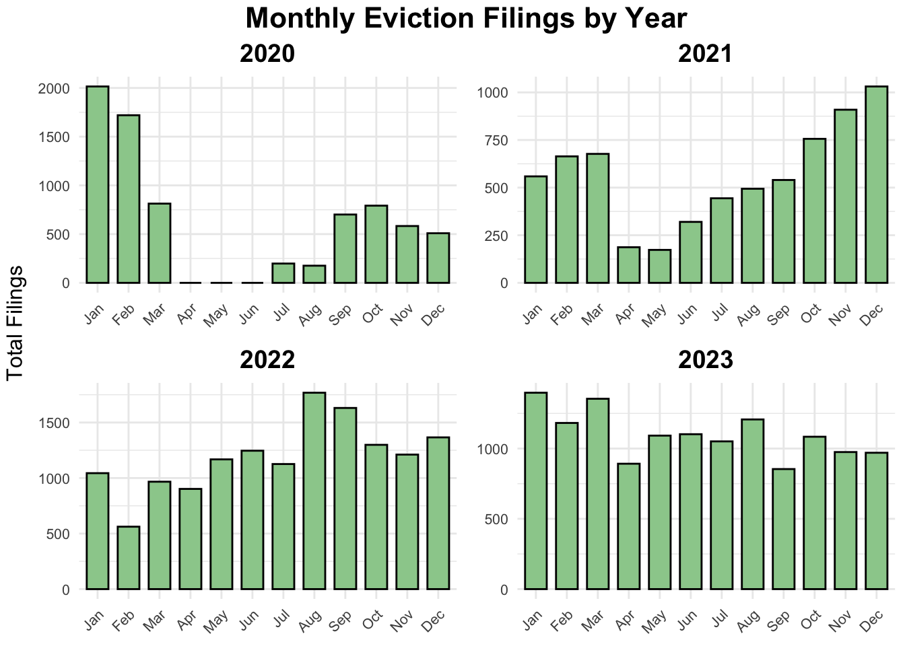
This figure shows monthly eviction filings in Philadelphia from 2020 to 2023. The COVID-19 caused filings to drop to near-zero from April to June 2020. Then it followed a recovery period in the late 2020. In 2022 and 2023, eviction filings are at higher levels. Second half of 2021 and 2022 and 2023 all exceed pre-pandemic patterns and showing seasonal peaks in late summer. There isn’t a cycle of eviction between different years.
Eviction Filings by Month Across Years
Code
# aggregate by year and monthmonthly_by_year <- df %>%group_by(year, month) %>%summarise(total_filings =sum(filings_2020, na.rm =TRUE), .groups ="drop") %>%filter(year %in%c(2020, 2021, 2022, 2023))# Function to create plot for each monthmake_month_plot <-function(data, month_num) { month_data <- data %>%filter(month == month_num) month_label <- month.abb[month_num] years_present <-sort(unique(month_data$year)) year_labels <-substr(as.character(years_present), 3, 4)ggplot(month_data) +geom_col(aes(x =factor(year), y = total_filings), fill ="darkseagreen3", color ="black", width =0.7) +scale_x_discrete(labels = year_labels) +labs(title = month_label, x =NULL, y =NULL) +theme_minimal() +theme(plot.title =element_text(face ="bold", hjust =0.5, size =11),axis.text.x =element_text(size =8),axis.text.y =element_text(size =8) )}# Create 12 plotsplot_list <-map(1:12, ~make_month_plot(monthly_by_year, .x))# Arrange 3x4combined <-ggarrange(plotlist = plot_list, ncol =4, nrow =3, align ='hv')annotate_figure(combined,top =text_grob("Eviction Filings by Month Across Years", face ="bold", size =14),left =text_grob("Total Filings", rot =90, size =11))
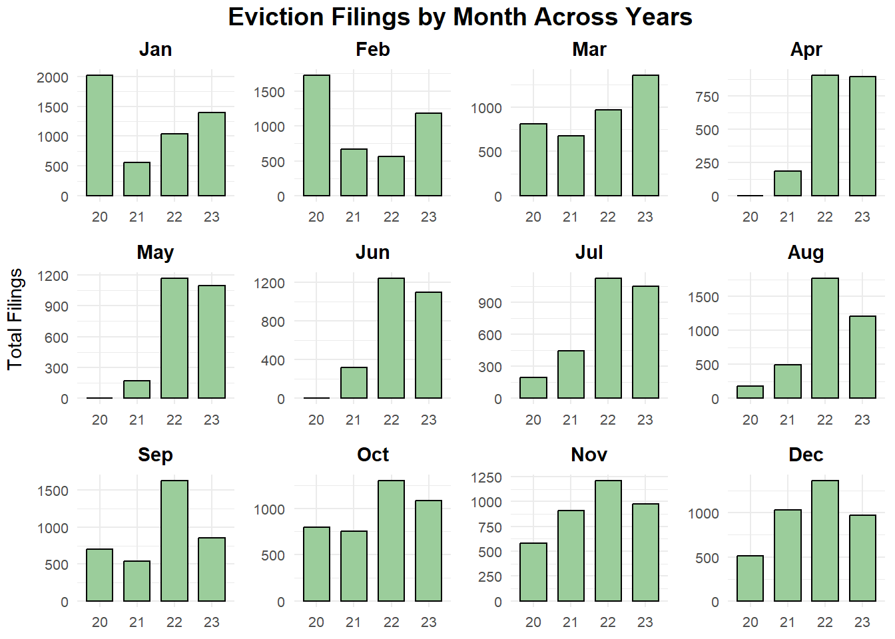
These graphs show the eviction filings across different years by month. There isn’t a consistent seasonal pattern, but it is clear that 2022 has some of the highest eviction activity across nearly all months. This spike reflects a major rebound in filings after the expiration of COVID-19 eviction protections. Although levels decline slightly in 2023, they remain higher than 2021. This indicates that the post-pandemic recovery period continues to place sustained pressure on renters.
Eviction Filings by Quarter Across Years
Code
# Aggregate by year and quarterquarterly_data <- df %>%mutate(year =year(first_of_month),quarter =quarter(first_of_month) ) %>%filter(year %in%c(2020, 2021, 2022, 2023)) %>%group_by(year, quarter) %>%summarise(total_filings =sum(filings_2020, na.rm =TRUE), .groups ="drop")# Function to create plot for each quartermake_quarter_plot <-function(data, quarter_num) { quarter_data <- data %>%filter(quarter == quarter_num)ggplot(quarter_data) +geom_col(aes(x =factor(year), y = total_filings), fill ="darkseagreen3", color ="black", width =0.7) +labs(title =paste0("Q", quarter_num), x =NULL, y =NULL) +theme_minimal() +theme(plot.title =element_text(face ="bold", hjust =0.5, size =14),axis.text.x =element_text(size =10),axis.text.y =element_text(size =10) )}# Create 4 plotsplot_list <-map(1:4, ~make_quarter_plot(quarterly_data, .x))# Arrange 2x2combined <-ggarrange(plotlist = plot_list, ncol =2, nrow =2, align ='hv')annotate_figure(combined,top =text_grob("Eviction Filings by Quarter (2020-2023)", face ="bold", size =16),left =text_grob("Total Filings", rot =90, size =12))
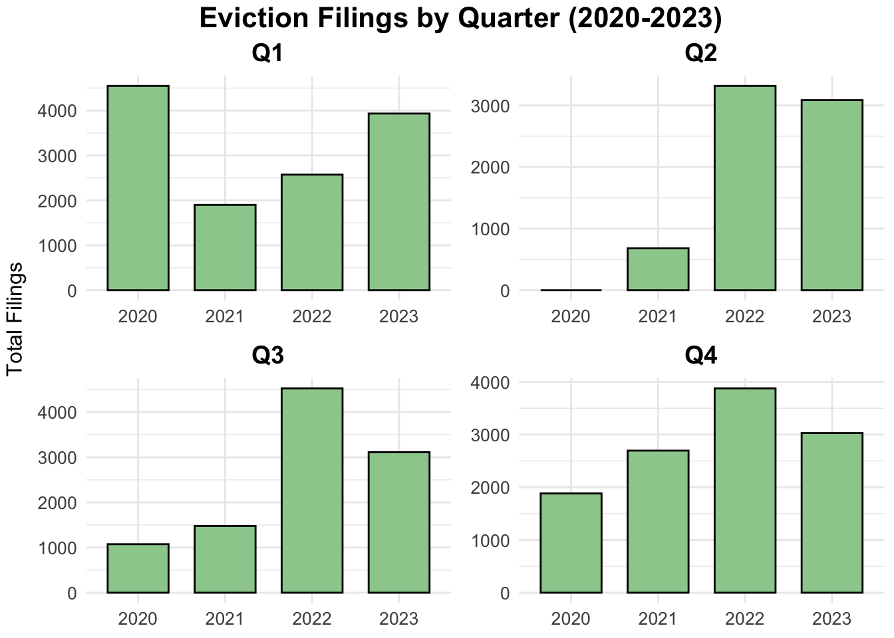
These are graphs that look at eviction filings on a quarterly basis across years. There isn’t a consistent pattern that follows through different quarters across years. One noticeable disruption occurs in 2020–2021, when filings dropped sharply due to overlapping federal, state, and local eviction moratoriums. Beginning in 2022, filings raised in all quarters as protections expired. This signals a return toward pre-pandemic eviction situation.
Eviction Map on Census Tract level from 2020-2023
Code
# aggregate filings by GEOID and yearevictions_by_tract_year <- df %>%group_by(GEOID, year) %>%summarise(total_filings =sum(filings_2020, na.rm =TRUE), .groups ="drop") %>%filter(year %in%c(2020, 2021, 2022, 2023))# join with census tract geometryevictions_map_data <- philly_tract_sf %>%left_join(evictions_by_tract_year, by ="GEOID")# function to create map for each yearmake_year_map <-function(data, year_num) { year_data <- data %>%filter(year == year_num)ggplot(year_data) +geom_sf(aes(fill = total_filings), color =NA, lwd =0) +scale_fill_viridis_c(option ="inferno",name ="Filings",na.value ="grey90" ) +labs(title =as.character(year_num)) +theme_void() +theme(plot.title =element_text(face ="bold", hjust =0.5, size =14),legend.position ="right",legend.key.height =unit(0.8, "cm"),legend.key.width =unit(0.3, "cm") )}# create 4 mapsmap_list <-map(c(2020, 2021, 2022, 2023), ~make_year_map(evictions_map_data, .x))combined_maps <-ggarrange(plotlist = map_list, ncol =2, nrow =2, common.legend =TRUE, legend ="right")annotate_figure(combined_maps,top =text_grob("Eviction Filings by Census Tract (2020-2023)", face ="bold", size =16))
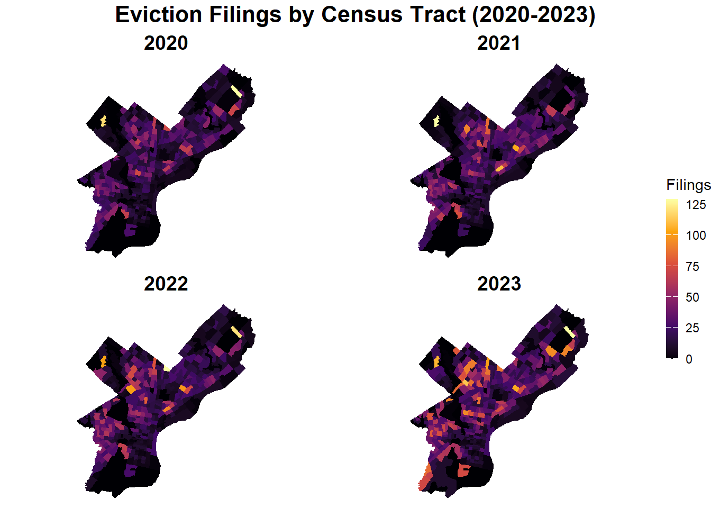
Eviction hot spots remain spatially persistent across all four years, concentrated in North Philadelphia, West Philadelphia, and parts of Southwest Philadelphia, while Center City and the Far Northeast consistently show lower filing rates. The overall intensity of evictions increased from 2020 to 2023.
Local Moran’s I
Code
# aggregate total filings by tract (across all years or pick one year)evictions_by_tract <- df %>%filter(year ==2023) %>%group_by(GEOID) %>%summarise(total_filings =sum(filings_2020, na.rm =TRUE), .groups ="drop")# join to geometryevictions_sf <- philly_tract_sf %>%left_join(evictions_by_tract, by ="GEOID") %>%filter(!is.na(total_filings))# create spatial weights (queen contiguity)neighbors <-poly2nb(evictions_sf, queen =TRUE)weights <-nb2listw(neighbors, style ="W", zero.policy =TRUE)# calculate Local Moran's Ilocal_moran <-localmoran(evictions_sf$total_filings, weights, zero.policy =TRUE)# add results to sf objectevictions_sf <- evictions_sf %>%mutate(local_i = local_moran[, 1],p_value = local_moran[, 5],scaled_filings =scale(total_filings),lag_scaled =lag.listw(weights, scaled_filings, zero.policy =TRUE),# classify hot/cold spotshotspot_type =case_when( scaled_filings >0& lag_scaled >0& p_value <0.05~"Hot Spot (High-High)", scaled_filings <0& lag_scaled <0& p_value <0.05~"Cold Spot (Low-Low)", scaled_filings >0& lag_scaled <0& p_value <0.05~"High-Low Outlier", scaled_filings <0& lag_scaled >0& p_value <0.05~"Low-High Outlier",TRUE~"Not Significant" ) )# plot LISA mapggplot(evictions_sf) +geom_sf(aes(fill = hotspot_type), color =NA) +scale_fill_manual(values =c("Hot Spot (High-High)"="#d7191c","Cold Spot (Low-Low)"="#2c7bb6","High-Low Outlier"="#fdae61","Low-High Outlier"="#abd9e9","Not Significant"="grey90" ),name ="Cluster Type" ) +labs(title ="Eviction Hot Spots and Cold Spots (2023)",subtitle ="Local Moran's I Cluster Analysis",caption ="Hot spots = High evictions surrounded by high evictions" ) +theme_void() +theme(plot.title =element_text(face ="bold", size =16),legend.position ="right" )
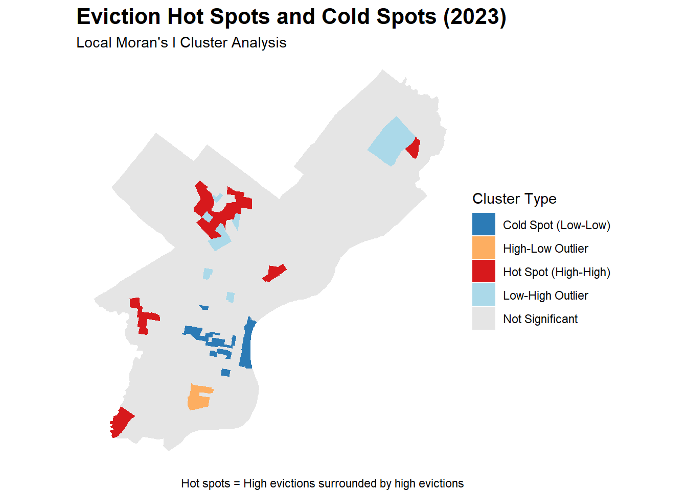
The map shows that significant eviction hot spots concentrated in North Philadelphia and some part of West Philadelphia, where high-eviction tracts cluster together. Cold spots appear in South Philadelphia and the Far Northeast, indicating areas where low evictions are surrounded by similarly low eviction rates, while most of the city shows no significant spatial clustering.
Distance from hot spot
Code
#identify hot spot centroids from LISA analysis abovehotspot_tracts <- evictions_sf %>%filter(hotspot_type =="Hot Spot (High-High)")hotspot_centroids <-st_centroid(hotspot_tracts)# calculate distance from each tract to nearest hot spotall_tracts <- philly_tract_sf %>%left_join(evictions_by_tract, by ="GEOID")tract_centroids <-st_centroid(all_tracts)# distance to nearest hot spotdist_to_hotspot <-st_distance(tract_centroids, hotspot_centroids)all_tracts$dist_to_hotspot <-apply(dist_to_hotspot, 1, min)all_tracts$dist_to_hotspot_km <-as.numeric(all_tracts$dist_to_hotspot) /1000# plot distance mapggplot(all_tracts) +geom_sf(aes(fill = dist_to_hotspot_km), color =NA) +scale_fill_viridis_c(option ="plasma",name ="Distance\n(km)",direction =-1 ) +geom_sf(data = hotspot_tracts, fill =NA, color ="red", size =0.8) +labs(title ="Distance to Eviction Hot Spots",subtitle ="Red outlines = Hot spot tracts",caption ="Darker = closer to high-eviction clusters" ) +theme_void() +theme(plot.title =element_text(face ="bold", size =16))
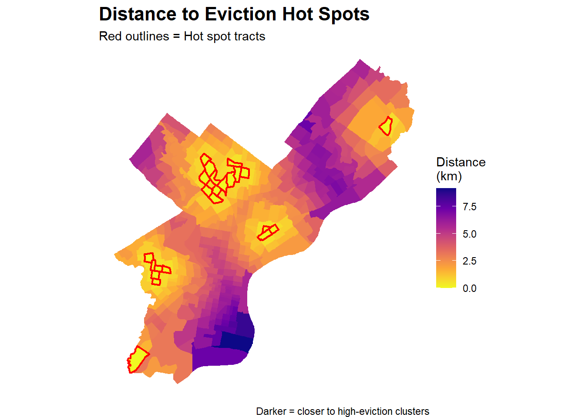
The Far Northeast and South Philadelphia are the most distant from high-eviction clusters, while much of North and West Philadelphia lies within close proximity to hot spots, indicating these areas may be at higher risk of eviction spillover effects.
Eviction vs Unemployment Rate
Code
# prepare datamap_data <- df_final %>%st_drop_geometry() %>%# ADD THIS LINEgroup_by(GEOID) %>%summarise(total_filings =sum(filings_2020, na.rm =TRUE),unemployment =mean(unemployment_rate, na.rm =TRUE),.groups ="drop" )map_sf <- philly_tract_sf %>%left_join(map_data, by ="GEOID") %>%filter(!is.na(total_filings) &!is.na(unemployment))# create tertiles for each variablemap_sf <- map_sf %>%mutate(filings_class =ntile(total_filings, 3),unemp_class =ntile(unemployment, 3),bi_class =paste0(unemp_class, "-", filings_class) )# define bivariate color palettebivariate_colors <-c("1-1"="#e8e8e8", # Low unemployment, Low evictions"2-1"="#ace4e4", # Med unemployment, Low evictions"3-1"="#5ac8c8", # High unemployment, Low evictions"1-2"="#dfb0d6", # Low unemployment, Med evictions"2-2"="#a5add3", # Med unemployment, Med evictions"3-2"="#5698b9", # High unemployment, Med evictions"1-3"="#be64ac", # Low unemployment, High evictions"2-3"="#8c62aa", # Med unemployment, High evictions"3-3"="#3b4994"# High unemployment, High evictions)# mapmap1 <-ggplot() +geom_sf(data = philly_tract_sf, fill ="grey90", color ="white", lwd =0.1) +geom_sf(data = map_sf, aes(fill = bi_class), color ="white", lwd =0.1) +scale_fill_manual(values = bivariate_colors, na.value ="grey90", guide ="none") +labs(title ="Eviction Filings vs Unemployment Rate",subtitle ="Darker purple = High evictions AND high unemployment" ) +theme_void() +theme(plot.title =element_text(face ="bold", size =16))# CREATE LEGEND DATA - this was missing!legend_data <-expand.grid(x =1:3, y =1:3) %>%mutate(bi_class =paste0(x, "-", y))legend1 <-ggplot(legend_data, aes(x = x, y = y, fill = bi_class)) +geom_tile() +scale_fill_manual(values = bivariate_colors, guide ="none") +labs(x ="Unemp. →", y ="Evict. →") +theme_void() +theme(axis.title.x =element_text(size =9, margin =margin(t =5)),axis.title.y =element_text(size =9, angle =90, margin =margin(r =5)) ) +coord_fixed()final_plot1 <-ggdraw() +draw_plot(map1, 0, 0, 1, 1) +draw_plot(legend1, 0.7, 0.05, 0.22, 0.22)print(final_plot1)
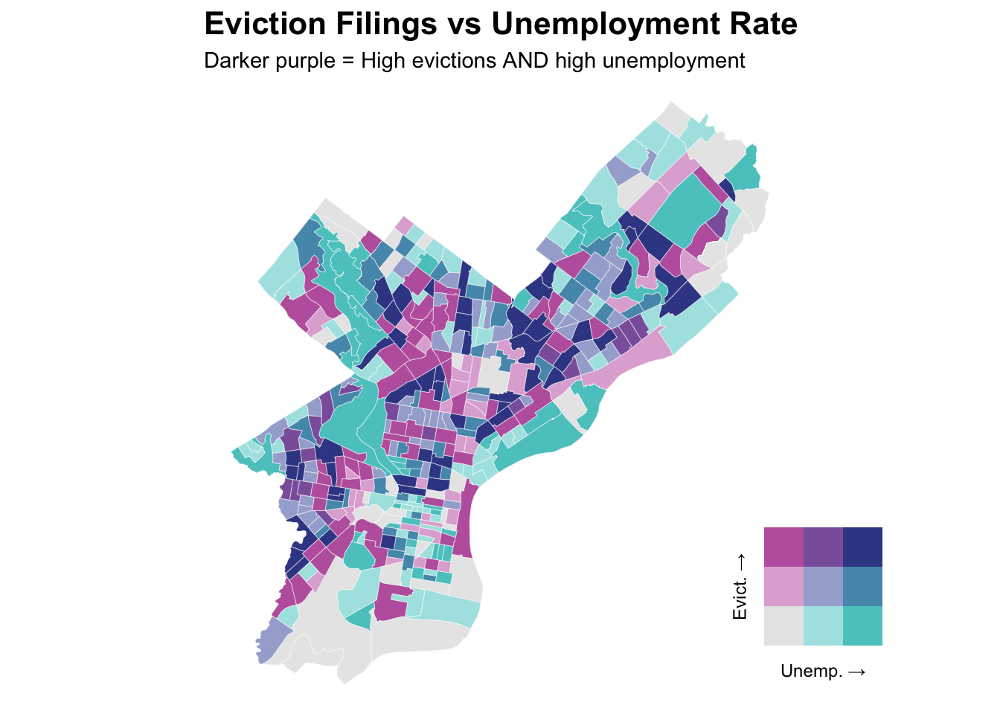
This map shows that high concentration of evictions with high unemployment occurs in North Philadelphia and parts of West Philadelphia. These areas are potentially facing economic hardship. Some South Philadelphia tracts show high unemployment but lower evictions, while the Far Northeast shows low values for both measures, suggesting that unemployment alone does not fully explain eviction patterns.
Eviction vs Median Gross Rent
Code
# prepare datamap_data <- df_final %>%st_drop_geometry() %>%group_by(GEOID) %>%summarise(total_filings =sum(filings_2020, na.rm =TRUE),median_rent =first(median_rent.y),.groups ="drop" )map_sf <- philly_tract_sf %>%left_join(map_data, by ="GEOID") %>%filter(!is.na(total_filings) &!is.na(median_rent))# create tertiles for each variablemap_sf <- map_sf %>%mutate(filings_class =ntile(total_filings, 3),rent_class =ntile(median_rent, 3),bi_class =paste0(rent_class, "-", filings_class) )# define bivariate color palette (different colors for this one)bivariate_colors2 <-c("1-1"="#e8e8e8", # Low rent, Low evictions"2-1"="#b8d6be", # Med rent, Low evictions"3-1"="#73ae80", # High rent, Low evictions"1-2"="#dfb0d6", # Low rent, Med evictions"2-2"="#a5add3", # Med rent, Med evictions"3-2"="#5698b9", # High rent, Med evictions"1-3"="#be64ac", # Low rent, High evictions"2-3"="#8c62aa", # Med rent, High evictions"3-3"="#3b4994"# High rent, High evictions)# mapmap2 <-ggplot(map_sf) +geom_sf(aes(fill = bi_class), color =NA) +scale_fill_manual(values = bivariate_colors2, na.value ="grey90", guide ="none") +labs(title ="Eviction Filings vs Median Rent",subtitle ="Darker purple = High evictions AND high rent" ) +theme_void() +theme(plot.title =element_text(face ="bold", size =16))legend_data <-expand.grid(x =1:3, y =1:3) %>%mutate(bi_class =paste0(x, "-", y))legend2 <-ggplot(legend_data, aes(x = x, y = y, fill = bi_class)) +geom_tile() +scale_fill_manual(values = bivariate_colors2, guide ="none") +labs(x ="Rent →", y ="Evict. →") +theme_void() +theme(axis.title.x =element_text(size =9, margin =margin(t =5)),axis.title.y =element_text(size =9, angle =90, margin =margin(r =5)) ) +coord_fixed()final_plot2 <-ggdraw() +draw_plot(map2, 0, 0, 1, 1) +draw_plot(legend2, 0.7, 0.05, 0.22, 0.22)print(final_plot2)
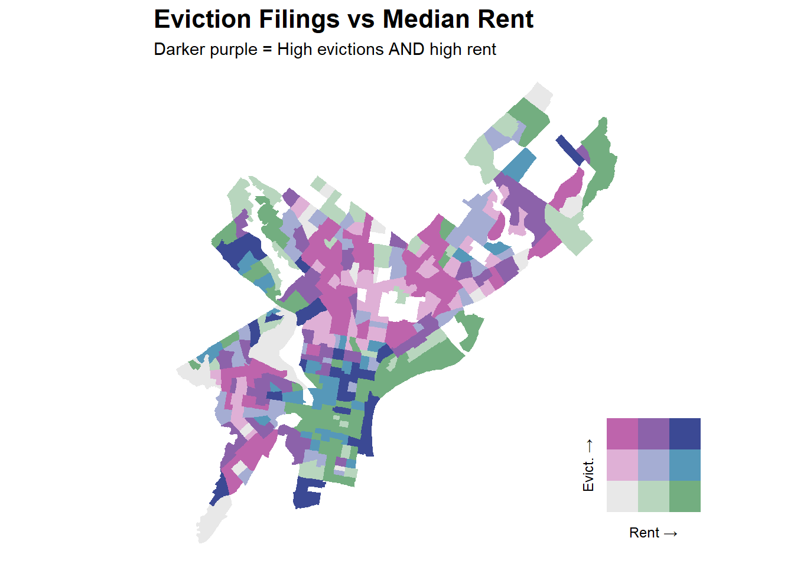
This map shows that high eviction areas are predominantly concentrated in lower-rent neighborhoods in North and West Philadelphia. High-rent tracts in Center City, University City, and the Far Northeast tend to have lower eviction rates.
Evication vs Median Household Income
Code
# prepare datamap_data <- df_final %>%st_drop_geometry() %>%# ADD THIS LINEgroup_by(GEOID) %>%summarise(total_filings =sum(filings_2020, na.rm =TRUE),median_income =first(median_hh_income),.groups ="drop" )map_sf <- philly_tract_sf %>%left_join(map_data, by ="GEOID") %>%filter(!is.na(total_filings) &!is.na(median_income))# create tertiles for each variablemap_sf <- map_sf %>%mutate(filings_class =ntile(total_filings, 3),income_class =ntile(median_income, 3),bi_class =paste0(income_class, "-", filings_class) )# define bivariate color palette (blue-red for income-eviction)bivariate_colors3 <-c("1-1"="#e8e8e8", # Low income, Low evictions"2-1"="#b5c0da", # Med income, Low evictions"3-1"="#6c83b5", # High income, Low evictions"1-2"="#f0b8b8", # Low income, Med evictions"2-2"="#ad9ea5", # Med income, Med evictions"3-2"="#567994", # High income, Med evictions"1-3"="#e64b35", # Low income, High evictions"2-3"="#985356", # Med income, High evictions"3-3"="#3b4994"# High income, High evictions)# mapmap3 <-ggplot(map_sf) +geom_sf(aes(fill = bi_class), color =NA) +scale_fill_manual(values = bivariate_colors3, na.value ="grey90", guide ="none") +labs(title ="Eviction Filings vs Median Household Income",subtitle ="Orange = High evictions AND low income" ) +theme_void() +theme(plot.title =element_text(face ="bold", size =16))legend_data <-expand.grid(x =1:3, y =1:3) %>%mutate(bi_class =paste0(x, "-", y))legend3 <-ggplot(legend_data, aes(x = x, y = y, fill = bi_class)) +geom_tile() +scale_fill_manual(values = bivariate_colors3, guide ="none") +labs(x ="Income →", y ="Evict. →") +theme_void() +theme(axis.title.x =element_text(size =9, margin =margin(t =5)),axis.title.y =element_text(size =9, angle =90, margin =margin(r =5)) ) +coord_fixed()final_plot3 <-ggdraw() +draw_plot(map3, 0, 0, 1, 1) +draw_plot(legend3, 0.7, 0.05, 0.22, 0.22)print(final_plot3)
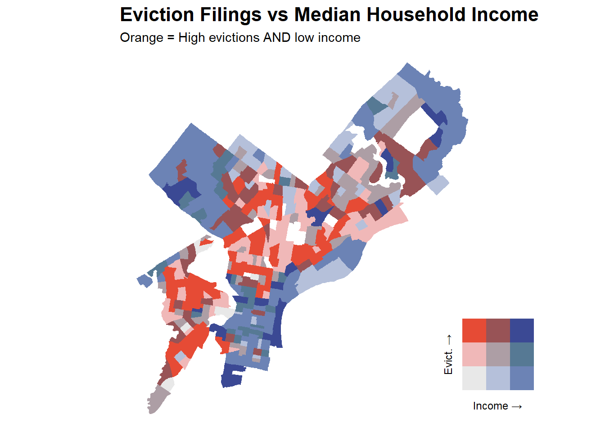
This map shows that most vulnerable tracts—high evictions combined with low household income—concentrated heavily in North Philadelphia, West Philadelphia, and Southwest Philadelphia. Higher-income areas such as Center City, Chestnut Hill, and the Far Northeast consistently show lower eviction rates, demonstrating that evictions disproportionately burden Philadelphia’s lowest-income communities where residents have the less financial cushion to absorb economic moves.
THE EVIDENCE & SOLUATION
Major Finding: Eviction filings stayed extremely low before September 2021 because Philadelphia’s local Emergency Housing Protection Act (March–August 2020), PHA’s internal eviction moratorium (March 2020–March 15, 2021), and the federal CDC eviction moratorium (September 2020–August 26, 2021) collectively prevented most cases from being filed. Once the CDC moratorium was struck down in late August 2021, these protections ended for the majority of renters. As a result, eviction filings began to rise again starting in fall 2021 and continued increasing into 2022.
Regression
We have four different regression models in total, with a very complicated process building and analyzing the models. Equation and table below display the logic of our model building process. \[
\text{Eviction} = \text{Census Characteristics} + \text{Temporal Characteristics} + \text{Spatial Characteristics}
\]
Characteristic Type
Variables
Census Characteristics
Income, race, renters characteristics, median rent (monthly), unit characteristics
As there is barely census level monthly data available, and the temporal range for ACS census is 5 years. We decide a number of temporal variables in a larger geography to account for the monthly change such as City level CPI and unemployment rate. We also add Year, season and policy indicators as 2020-2023 experiences the covid period, and the federal government has publish policy such as eviction moratorium that influences the eviction rate. We believe adding these indicators could better estimate and predict the future evictions.
Moreover, we also add some spatial features to account for the potential spatial autocorrelation. Both neighborhood effects and EconKDE could capture the eviction differences in High/low income neighborhood that makes our predictions accuracy better.
Create more variables (more feature engineering) before running the regression
Code
#calculate eviction by populationdf_final$evibypop=df_final$filings_2020/df_final$total_pop*100outlier_threshold <- df_final %>%filter(!is.na(filings_2020)) %>%pull(filings_2020) %>%quantile(probs =0.99)#filter the top1% outlier, create log variabledf_filtered = df_final %>%filter(!total_pop==0)%>%filter(!is.na(median_rent.y))%>%filter(filings_2020 <= outlier_threshold)%>%mutate(log_pop =log(total_pop +1),log_rent =log(median_rent.y +1))df_filtered <- df_filtered %>%mutate(# Rent-to-income ratio, as income level may highly correlated with rent levelrent_to_income = median_rent.y / (median_hh_income /12),rent_to_income =ifelse(is.infinite(rent_to_income) | rent_to_income >2, NA, rent_to_income),# Temporal featuresmora =ifelse(week_date >=as.Date("2020-03-01") & week_date <=as.Date("2021-08-31"), 1, 0), #mora refers to the federal eviction moratorium periodpost_mora =ifelse(week_date >=as.Date("2021-09-01") & week_date <=as.Date("2022-03-31"), 1, 0),winter =ifelse(month(week_date) %in%c(11,12, 1), 1, 0) #winter dummy variable ) %>%# Lagged unemploymentgroup_by(GEOID) %>%arrange(GEOID, week_date) %>%mutate(unemployment_lag3 =lag(unemployment_rate, 3))%>%#based on our research, there is at least 45 days for renters to make up until the eviction happens, so we specifically use 3 month lag of unemployment for this effectungroup()
Using stargazors for the summary statistics of our final dataframe
Code
# Select key variables and create a data frame with proper labelssummary_vars <- df_filtered %>%st_drop_geometry() %>% dplyr::select( filings_2020, unemployment_rate, unemployment_lag3, avg_wkly_wage, electricitycpi, foodcpi, comcpi, median_rent.y, pct_renter, rent_to_income, pct_black, pct_family, median_hh_income, total_pop, EconKDE, pct_rent_burdened )stargazer(as.data.frame(summary_vars),type ="text",title ="Summary Statistics of Key Variables",covariate.labels =c("Eviction Filings","Unemployment Rate (%)","Unemployment Rate (3-month lag) (%)","Average Weekly Wage ($)","Electricity CPI","Food CPI","Commodity CPI","Median Rent ($)","Percent Renter (%)","Rent-to-Income Ratio","Percent Black (%)","Percent Family Households (%)","Median Household Income ($)","Total Population","Economic Activity Density (KDE)","Percent Rent Burdened (%)" ),summary.stat =c("n", "mean", "sd", "min", "max"))
Summary Statistics of Key Variables
==================================================================================
Statistic N Mean St. Dev. Min Max
----------------------------------------------------------------------------------
Eviction Filings 45,349 2.271 2.863 0 15
Unemployment Rate (%) 45,349 6.745 3.497 3.700 15.900
Unemployment Rate (3-month lag) (%) 44,188 6.818 3.512 3.700 15.900
Average Weekly Wage () 45,349 1,486.027 82.980 1,363 1,613
Electricity CPI 45,349 203.450 21.899 176.285 237.277
Food CPI 45,349 271.918 20.783 242.456 299.842
Commodity CPI 45,349 206.230 16.677 179.939 222.215
Median Rent () 45,349 1,488.804 475.119 400.000 8,500.000
Percent Renter (%) 45,349 51.107 20.348 0.000 100.000
Rent-to-Income Ratio 44,789 0.320 0.174 0.062 1.909
Percent Black (%) 45,349 38.409 32.604 0.000 99.269
Percent Family Households (%) 45,349 50.107 16.031 5.882 100.000
Median Household Income () 44,799 67,990.340 34,623.880 13,721 192,727
Total Population 45,349 4,047.357 1,583.108 299 10,406
Economic Activity Density (KDE) 45,349 0.0001 0.0001 0.00000 0.0003
Percent Rent Burdened (%) 45,313 47.415 16.117 6.349 100.000
----------------------------------------------------------------------------------
Model 1: Possion regression of eviction rate on demographic characteristics
Code
library(MASS)library(caret)library(AER)
As eviction is count data, we first use Poisson model.
Code
#run regression based on census characteristicoptions(scipen =999)model1=glm(filings_2020~pct_white+median_hh_income+pct_renter+unemployment_rate+median_year_built_renter+aggregate_rooms+pct_family+total_hh+pct_black+pct_asian,family ="poisson",data=df_filtered)
Check multicollinearity using VIF
the VIF for white population, total household and aggregate room is high, implying potential muti-colinearity
over dispersion exists in the data, we have to switch to negative binomial model instead
Code
dispersiontest(model1)
Overdispersion test
data: model1
z = 39.931, p-value < 0.00000000000000022
alternative hypothesis: true dispersion is greater than 1
sample estimates:
dispersion
2.376724
Model 2: Negative binomial regression using the same variables
As the assumption for poission model does not hold, we use negative binomial model instead
The model shows that current unemployment has a strong negative association with eviction filings (-0.254), while lagged unemployment exhibits a positive effect (0.055), suggesting that evictions may be delayed responses to economic distress as households exhaust resources over time, it makes sense as based on our research, the eviction would not happen after 45 days the renters did not pay rent. Housing affordability measures show mixed effects: while higher median rents are associated with fewer filings (-0.120), as more wealthy people tend to rent expensive apartments, and their wealth made them less likely to violate the contrast (not pay rent). Neighborhoods with higher percentages of renters (0.020) and greater rent burden (0.002) experience more eviction filings, which makes sense. The model captures strong temporal effects, with the eviction moratorium period showing 17% fewer filings (β = -0.182) and the post-moratorium period showing 27% fewer filings (β = -0.311), indicating lasting changes in eviction patterns. Racial disparities are evident, with higher percentages of Black residents associated with increased filings (0.010). Notably, economic activity density has a strong negative association ( -5,370), suggesting that neighborhoods with more concentrated economic opportunities experience fewer evictions, possibly due to better employment access or different housing market dynamics.
Validation comparision between four different models
Based on the validation result, Model 4 has the lowest RMSE and MAE while still maintain a good R2, as a result, we decide Model 4 as our best model.
The model shows higher prediction errors concentrated in North Philadelphia and scattered tracts in West Philadelphia. This corresponds to the eviction hot spots identified in the earlier analysis. Lower errors appear in South Philadelphia, Center City, and the Far Northeast, where eviction rates are generally lower and more stable. The gray tracts represent missing data. Overall, the model struggles more in high eviction neighborhoods. It suggests that some additional spatial or socioeconomic features may be needed to improve predictions in these areas. It could be helpful if we could design spatial feature to tacklet the issue.
Code
# observed vs predicted by policy periodggplot(df_filtered, aes(x = filings_2020, y = predicted)) +geom_point(alpha =0.2, color ="#3182bd") +geom_abline(slope =1, intercept =0, color ="red", linewidth =1) +geom_smooth(method ="lm", se =FALSE, color ="darkgreen") +facet_wrap(~time_period) +labs(title ="Observed vs. Predicted Eviction Filings",x ="Observed Filings",y ="Predicted Filings",caption ="Red = perfect predictions; Green = model fit" ) +theme_minimal() +theme(plot.title =element_text(face ="bold"))
`geom_smooth()` using formula = 'y ~ x'
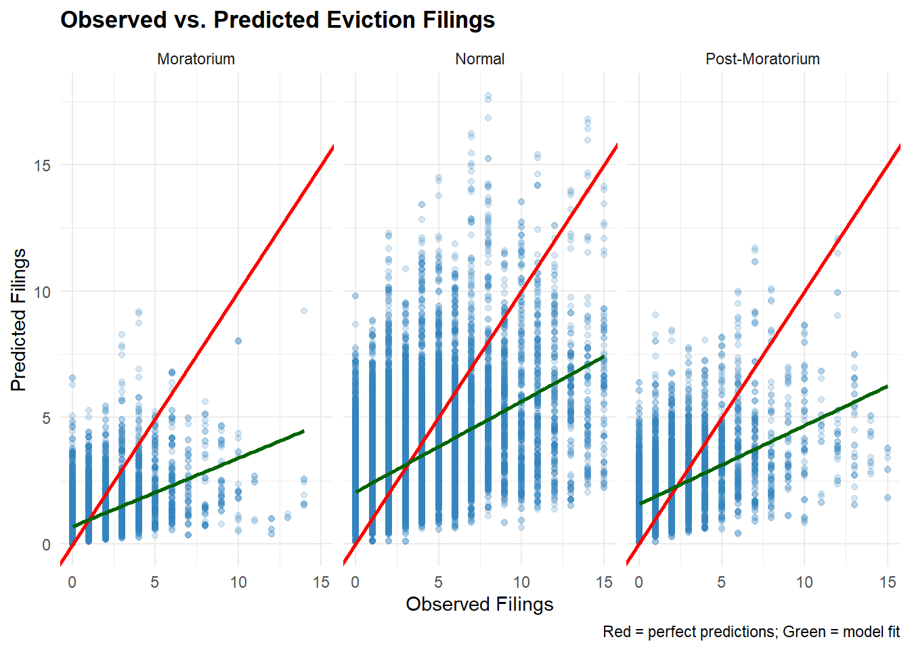
Across these three different policy periods, the model underpredicts eviction filings. The model performs best during the Moratorium period when overall filings were low. During the Normal period, the model struggles with high-filing tracts. The Post-Moratorium period shows a similar pattern of underprediction, indicating the model may be missing some important predictors.
Code
# errors vs demographicserror_demo_plots <-function(data, x_var, x_lab) {ggplot(data, aes(x = .data[[x_var]], y = MAE)) +geom_point(alpha =0.5, color ="#3182bd") +geom_smooth(method ="lm", se =FALSE, color ="red") +labs(title =paste("Errors vs.", x_lab), x = x_lab, y ="MAE") +theme_minimal()}tract_demo <- tract_errors_sf %>%st_drop_geometry() %>%filter(!is.na(MAE))grid.arrange(error_demo_plots(tract_demo, "median_income", "Median Income") +scale_x_continuous(labels = scales::dollar),error_demo_plots(tract_demo, "pct_black", "% Black"),error_demo_plots(tract_demo, "pct_renter", "% Renter"),error_demo_plots(tract_demo, "pct_rent_burdened", "% Rent Burdened"),ncol =2)
`geom_smooth()` using formula = 'y ~ x'
`geom_smooth()` using formula = 'y ~ x'
`geom_smooth()` using formula = 'y ~ x'
`geom_smooth()` using formula = 'y ~ x'
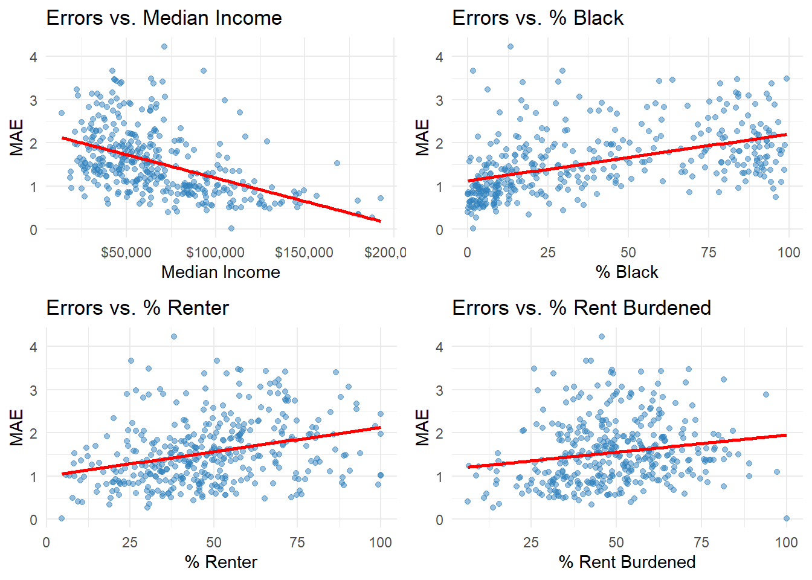
The model performs better in higher income tracts, while prediction errors increase in lower income neighborhoods. Tracts with higher Black population percentages show slightly higher MAE. This could reflect that the model have a hard time predicting majority Black community where it face disproportionate eviction rates. Errors increase with higher renter percentages and higher rent burden. These equity patterns raise some concerns on the model is less accurate in communnity that potentially need more attention.
THE IMPLEMENTATION
One of the primary ways to implement this tool is to develop a Monthly Risk Score based on the prediction. It would be helpful for city agencies to have a map that shows predicted high-risk census tracts and updates the predictions monthly as new data arrives. When a specific tract’s risk score exceeds a certain threshold, the city agency should deploy resources to prevent eviction from occurring.
From the user’s perspective, it would be beneficial to develop an Emergency Rental Assistance Application program. This program should also coordinate with the courts to flag cases that appear in high-risk areas.
From a data perspective, we already have the eviction filing, census tract demographics, and economic indicators. These existing resources already provide a large foundation for our prediction model and serve as the base for policy implementation. However, it would also be essential to continue having tools like real-time rental listings that track how the rental listing shifts, as long as these other factors are taken into account.
These implementation ideas of our solution still have some limitations and raise some ethical concerns.One of the limitations is the model’s performance, and the model underpredicts eviction filings, especially in high eviction tracts during the post-moratorium period. The tool may underestimate true risk and lead to insufficient resource allocation precisely where help is needed most.
Another limitation is on the data aspect. Our model relies on monthly city-level economic indicators rather than tract-level data. Also, the Dewey rental data source gives listing prices and not the actual rents paid. We have more updated data on evictions and rents, but the ACS 5-year estimates limit our prediction model back in time, and we are unable to fully put it to use.
One more major limitation is the time. Because of the data that we have, we trained on 2020 to 2023 data, which is a period that was heavily influenced by the COVID-19 pandemic and the moratorium relief program. It is not clear how well the model will generalize to future periods.
One last limitation in our model is the issue of spatial autocorrelation. While we include fixed effect and KED, the prediction error still appears, and that suggests that we didn’t really take into account the unmeasured spatial feature and process, and that’s what our model currently misses.
With these limitations and the implementation of the mode, let’s discuss some ethical concerns. The model does not perform relatively well in low-income, black, and rent-burdened communities. These communities are the ones that are most in need, and deploying our tool may systemically underpredict some of the struggles that they may be experiencing. This potentially results in us not being able to allocate enough resources on time.
With one of our implementations, coordinating with courts to flag cases in high-risk areas may raise some privacy concerns. Residents in flagged tracts may face stigmatization, and landlords could use risk to justify discriminatory practices that may not be fair to those residents. It would be important for the affected residents to know how the risk scores are calculated and how the decisions are made based on the prediction. It would be really important to have a clear governance framework that makes the tool accountable and serves the true goods of the impacted community.